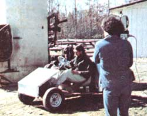

Thanks to Judy Helsinger (one of Bantam Books' dynamite publicity people), Geraldo Rivera (yes ladies, the Geraldo Rivera) and an ABC-TV film crew recently visited MOTHER's facilities down here in the mountains of western North Carolina. During the course of that visit, Geraldo had a chance to see and report on some of the experiments in self-sufficient living that we always seem to be working with.
Among the other things that Geraldo inspected "down on MOTHER's farm", were a methane-powered car, a 2-kw windplant and bank of storage batteries and the all-electric house that they light and partially power, a variety of solar cookers, MOTHER's solar-heated editorial offices, and a 4' X 4' X 4' sprouting cabinet loaded with growing shoots of alfalfa, lentils, wheat, and oats.
The footage of all this activity was scheduled for nationwide showing on ABC's Good Morning America program . . . but, unfortunately, it'll probably already have been aired by the time you receive this issue of our magazine. Sorry if you missed it . . . but THANKS Geraldo and ABC and Judy Helsinger for helping us carry MOTHER's word to folks who wouldn't otherwise have seen it.
|
 Geraldo Rivera gets taken for a ride-past the barn and methane production unit?in a genuine methane powered car . . . while the cameras record it all on film. |
|
|